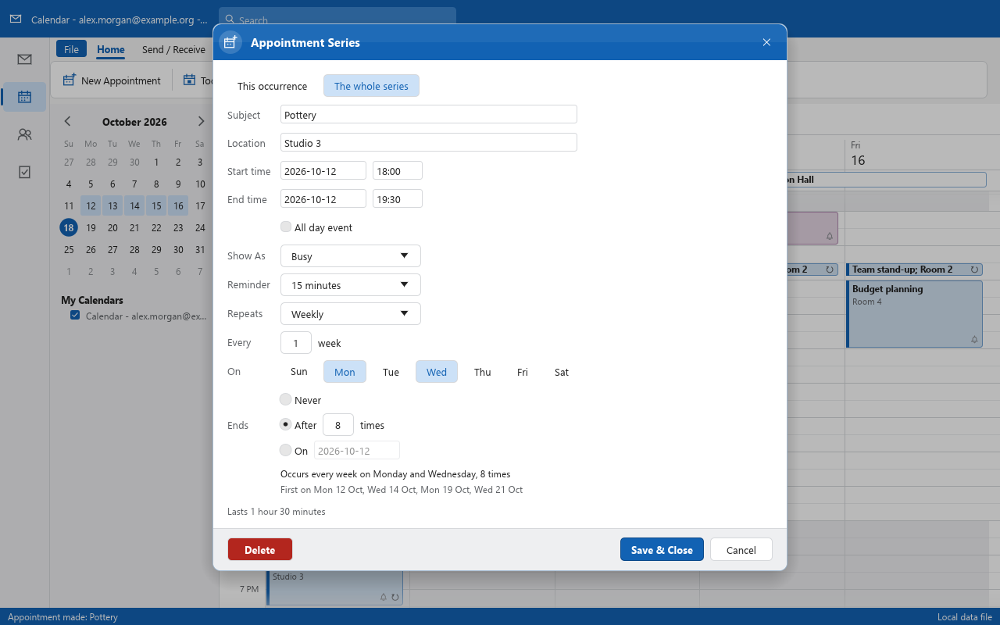
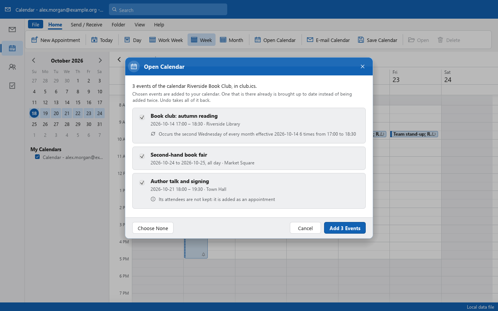
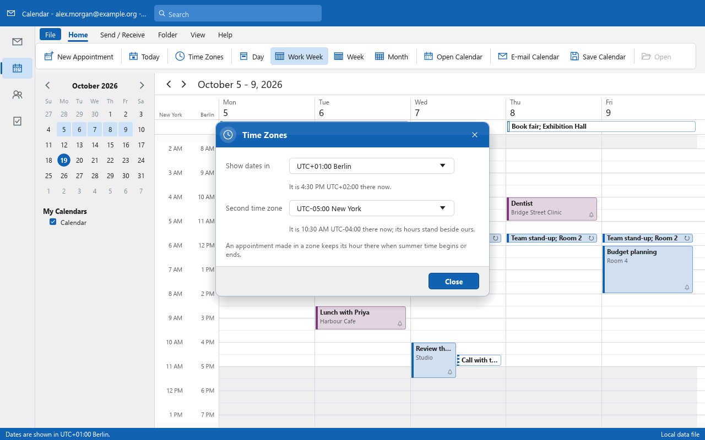

Outlook data files
Opens .pst and .ost (ANSI, Unicode and 4K pages) and single .msg, .oft and .eml messages. Files written here open in Outlook Classic with every folder and message as written.
Early · milestone M5 (calendar, people, tasks) in progress: the Calendar's views, appointments and recurring appointments are in, with time zones and their summer time, calendars keep in step with CalDAV servers, and accounts and their mail come over from Outlook
OpenMailClient is a clean-room, open-source mail client aiming at parity with Outlook Classic,
the Win32 desktop Outlook: the same layout and behaviour, .pst files that go both ways,
and every feature reachable as a command from the window, a CLI and, later, an MCP server for agents.

Opens .pst and .ost (ANSI, Unicode and 4K pages) and single .msg, .oft and .eml messages. Files written here open in Outlook Classic with every folder and message as written.
Nothing is written until you save. Unsaved changes are journalled beside the file and come back after a crash; a save writes with an undo file beside it, so a power cut leaves the file as it was.
HTML and RTF bodies laid out and drawn in-process: tables, borders, lists, right-to-left text, pictures of many kinds (animated ones too) and Windows metafiles.
Servers found from your address (the address itself is sent to no one); IMAP, POP3 and SMTP over TLS with checked certificates (a server's own trusted on the owner's word, for that server only), passwords in the system's credential store, each account in a data file of its own, Send/Receive on F9 and on a timer with its progress in a window of its own, messages held until a time and expiring, only what changed asked of an IMAP server that keeps mod-sequences (CONDSTORE, QRESYNC), folders renamed, moved and deleted followed both ways, drafts kept on the server as they are written and drafts from elsewhere opened to be finished here, and new mail received the moment the server says it came (IDLE) and told of at the corner of the screen with a chime of our own.
Memo Style and Table Style print on any printer the system has, with copies and a page range, or to PDF; the print window shows the pages beside the page setup, and the message body can be printed alone, without its details, header and footer.
The ribbon, shortcuts, command search and the CLI all run the same commands by id, so whatever the window can do can be scripted, and soon driven by an agent.
Every picture is of the sample mailbox, with invented content, drawn headlessly by the project's own screenshot tool.







The numbers are measured, not estimated. The roadmap keeps the log, and work put off is kept as a scheduled "do later" row, never dropped.
.pst: a mailbox saved, changes kept, settings kept.ics calendar files opened and saved (done); calendars kept in step with a CalDAV server such as Nextcloud, both ways (done); time zones with their summer time, a second zone's hours beside ours (done); meetings nextunsafe in the code; every file reader is tested with hostile input.
There are no packaged releases yet. With a Rust toolchain (1.90 or newer):
git clone https://github.com/AdriaanBoshoff/OpenMailClient
cd OpenMailClient
cargo run --release -p openmailclient -- --sampleOpen your own archive, or work without a window:
cargo run --release -p openmailclient -- path/to/archive.pst
cargo run --release -p openmailclient-cli -- inspect path/to/archive.pst --check
cargo run --release -p openmailclient-cli -- convert message.msg message.emlOpening a data file never changes it; nothing is written until you save.